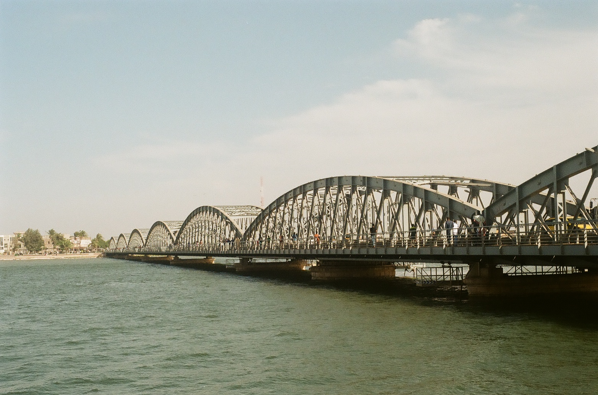
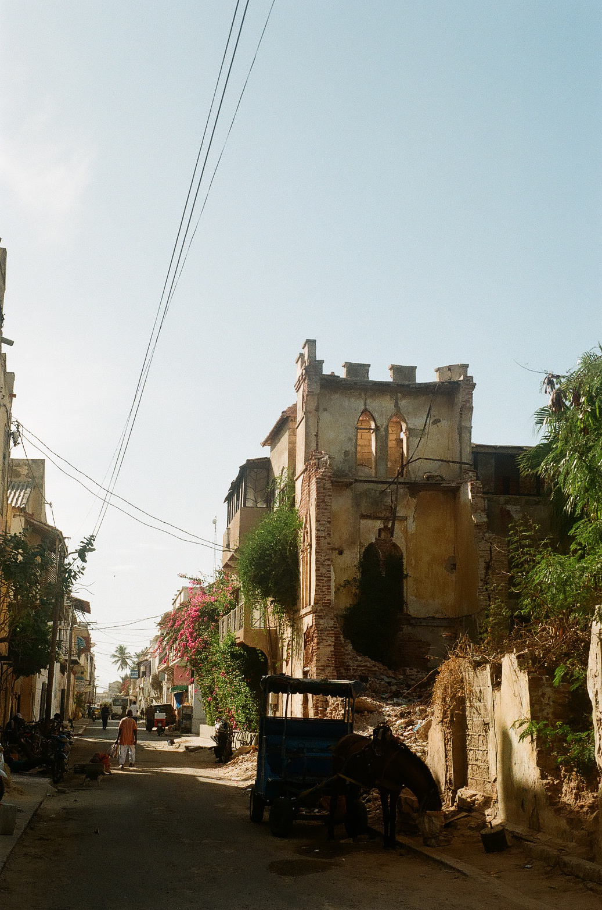
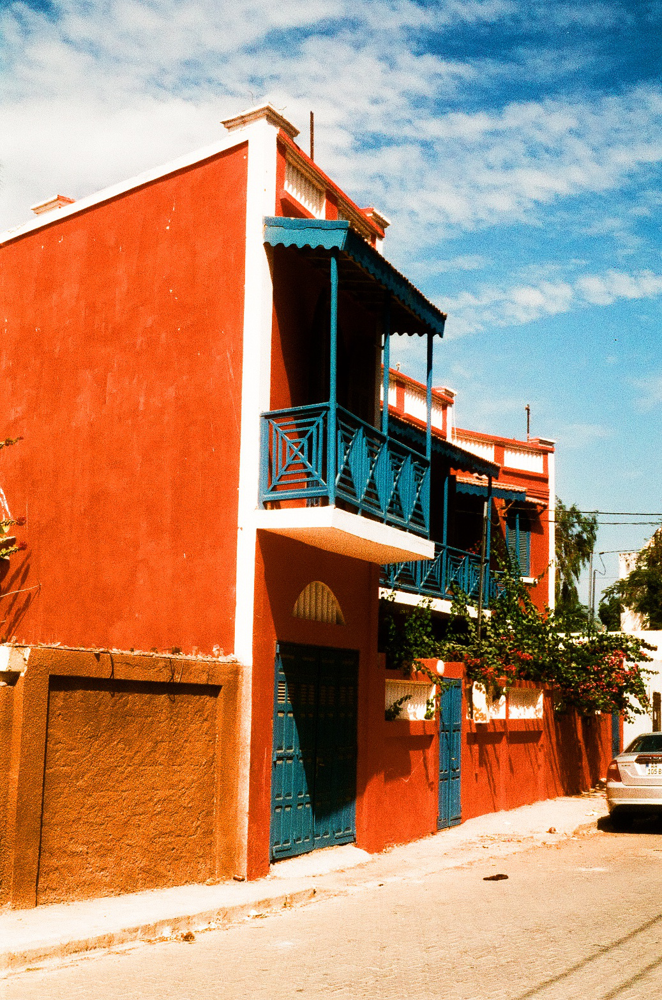
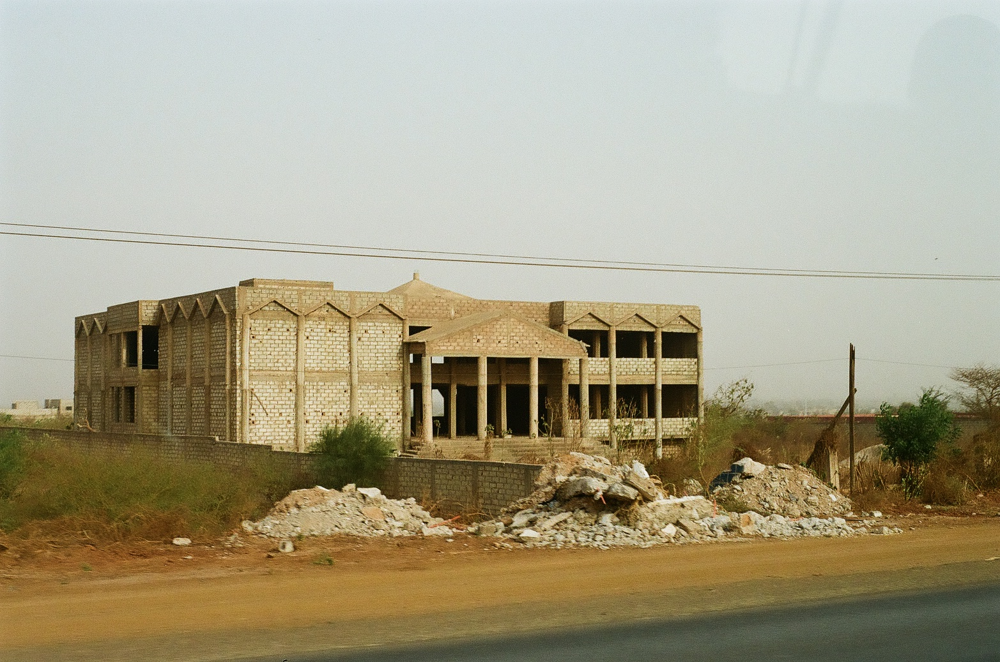
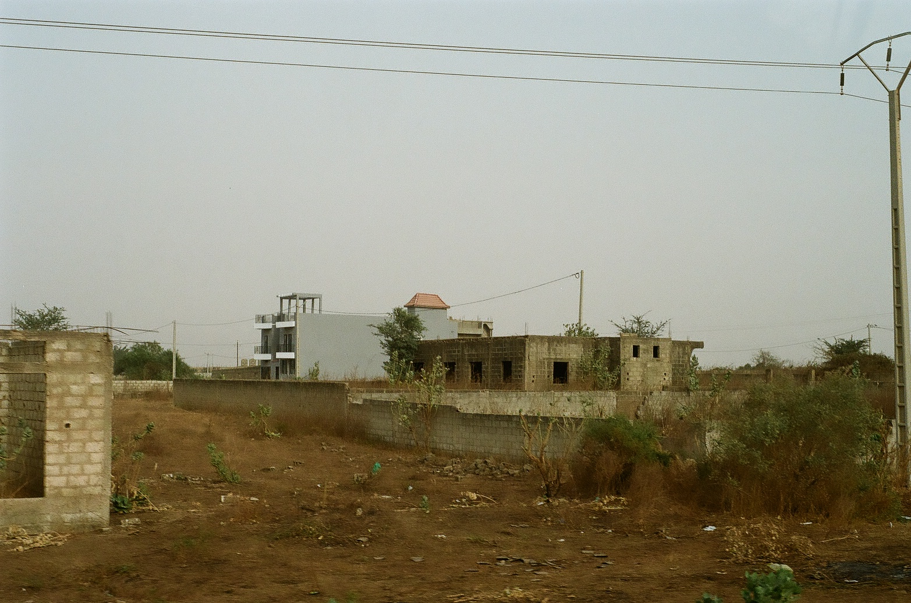
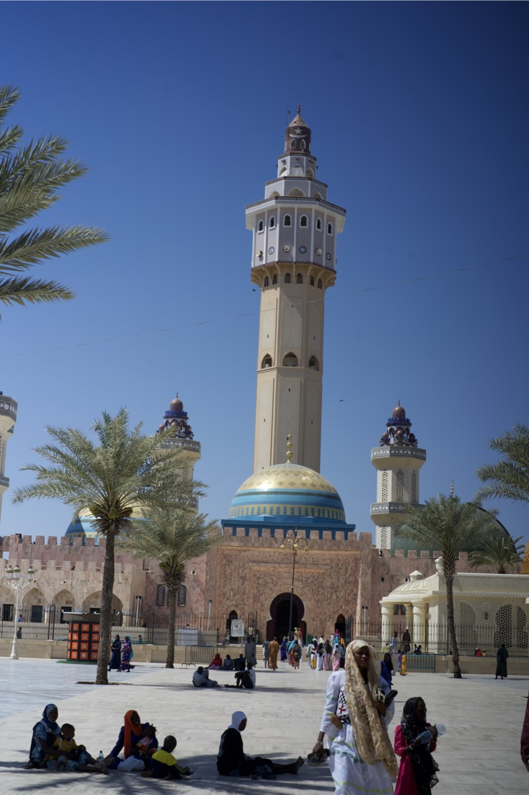
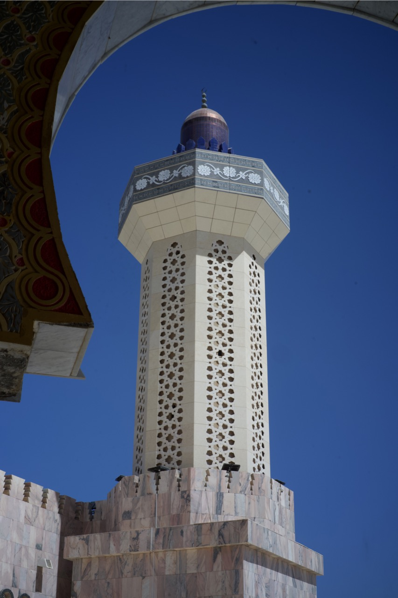

View across Dakar from the African Rennaissance Monument
Sony a7iii with a dirty 50mm lens
Senegal boasts a wide array of architectural and urban styles both modern and historical. While these styles are woven together across the country, there are regional differences based on the history of that particular location. Saint Louis has a distinctly European colonial city structure, Touba features unique urban design informed by religion and Dakar is a melting pot of foreign ideas molded to fit the needs of Western Africa.
In Saint Louis, significant architectural remnants of Senegal’s colonial history remain to this day. The earliest examples are those built by the Portuguese, but the most prevalent and iconic come from the period of French control when the city was a major trade hub and the capital of French West Africa. These range in scale from the largest pieces of infrastructure to single family homes.
Access to the Island of Saint Louis is granted by the Faidherbe Bridge which spans over 500m across the Senegal River to reach the mainland. It was constructed to replace an older floating bridge which was in turn constructed to replace an overtaxed ferry route. The design and construction of the bridge was contracted out to a pair of companies, one of which is particularly notable for being owned by Alexandre Gustave Eiffel of Eiffel Tower fame. The bridge was officially opened in 1897 making it 127 years old in 2024. In 2011 it underwent significant repair and restoration as over a century of exposure and use had resulted in significant wear and corrosion.
The Faidherbe Bridge viewed from the island of Saint Louis
Kodak Gold 200, 50mm
A steam crane historically used to load and unload ships
Harman Phoenix 200, 50mm
Across the bridge are many more relics of the colonial period that remain in use. The island still follows the grid based city plan adopted by governor Louis Faidherbe after whom the bridge was named. Within that grid are many buildings that are distinctly colonial in both style and purpose. The Governor’s Palace situated directly across the bridge was the seat of power for the colonial government. Other parts of this past remain spread across the Island. Toward the North end a steam crane can be found, which is a remainder of the commerce that took place on the island. This crane was used to lift cargo on and off ships that docked there. The trade that took place here was in a variety of goods like gum arabic, but it is most infamous for the quantities of slaves that departed from the port.
The remains of buildings once used to run the island's commerce
Kodak Gold 200, 50mm
The French colonial style of architecture seen across Senegal, but particularly in cities like Saint Louis and Dakar was not imported without reason. It was far more expensive to construct than the types of buildings that could be found locally. This served as a symbol of the wealth and strength of the colonial powers. There was a common view held by those in power in the colonial government that the region lacked significant architecture. While this is simply not true, it created the impression of “civilizing” the region through the introduction of French architecture and served to further physically and socially separate those in the urban centers from those outside.
A house in Saint Louis built in French Colonial style, although featuring a different coat of paint
Harman Phoenix 200, 50mm
Aesthetically, the building style brought to Senegal by the French has much in common with French colonial architecture in other parts of the globe despite being separated by such distance. Examples of this can be seen anywhere that was colonized by the French such as Vietnam, Canada, the United States, China and of course Senegal. Some key similarities between the various styles are the iron and concrete railings on the balconies and the slatted window shutters which are often painted in vibrant colors. Note the common elements between these photos. Despite differences brought about by their separation in both space and time, these buildings share a common design language.
A large, incomplete house located between Dakar and Saly
Kodak Gold 200, 50mm
When entering the cities of Dakar and Saly by road, one of the first things a traveller may notice is the massive quantity of under construction or unfinished houses that line the roadways, often outnumbering completed houses. Some are under active construction, with workers visibly pouring concrete or laying rebar. Many others are not; a fact conveyed by their overgrown driveways and incomplete yet heavily weathered exteriors. Many of these seemingly abandoned structures exhibit features that make them stand out from from more typical, complete houses seen closer to the center of the city. Perhaps the most striking example of this is their size. Many of them have two or more floors, making them stand out by height alone. Others are notable for their horizontal dimensions with the larger examples dwarfing the inhabited homes around them. Others still differ stylistically from the typical Dakarois home. Rather than the comparitively simple rectangular shapes of houses that are in active use, these buildings may take inspiration from structures found abroad both in scale and in style. Take for an example the above image of one of these incomplete homes. It appears to take inspiration from elements of classical or neoclassical architecture with its symmetry, great pillars, stairs and pointed roof sections. This is a style that is rarely seen elsewhere in Dakar. These architectural differences are tied to the houses’ reasons for existing at all.
More incomplete construction outside Dakar
Kodak Gold 200, 50mm
The existence of these perpetually incomplete houses begs the question - where are they coming from? The answer is mostly Senegalese emigrants and those working abroad sending money back to Senegal to fund construction. Some are constructing for the purpose of investing in the country’s largest city. Dakar is the economic center of Senegal with a GDP per capita significantly higher than the country as a whole. Others are building to provide a home for their family. With high rates of unemployment (16.8%) and poverty (26%) in Dakar, it may fall on those working abroad to meet the housing needs of those who remained behind. Many of the houses remain unfinished for long periods of time or indefinitely for a number of reasons. One of the most common is simply lack of money. Due to limited opportunities for loans, the houses are built slowly as money becomes available. For those building as a form of investment, slowly putting money into a building may be more appealing than putting it into banks, which are not considered trustworthy by many.
Touba's Great Mosque
Sony a7ii with a slightly less dirty 50mm lens
At the center of another city is a building that is perpetually incomplete in an entirely different sense. The Great Mosque in Touba has undergone decades of work both in its initial construction which began in 1932 and did not end until 1963 and continued in later improvements. While there were events that slowed the construction process, the 31 years between the beginning and end of the building process is in no small part due to the enormous scale of the project. The mosque has a capacity measured in the thousands and It has been expanded and modernized in the near century since its conception with the completion of its construction and the addition of modern conveniences like air conditioning. Sections of marble tile have been replaced with more porous stone to make it cooler to walk on barefoot and numerous other changes have been made to ensure it is up to the task of supporting the physical and spiritual needs of the millions of Murids who make the Grand Magal - the pilgrimage to Touba.
The Great Mosque of Touba lies at the heart of the city in both a physical and spiritual sense. These two meanings are intertwined, as the urban design of Touba is dictated by the city’s spiritual significance. The mosque marks the point that was first settled by the founder of the Murid order, Ahamdu Bamba. In this sense it is also the historical point of origin for the city. The mosque is the point from which roads radiate and the point that Touba’s ringroad encircles. This road is called the Rocade and serves to differentiate the core of the sacred city from the rest of the world. Just as the Great Mosque serves as the spiritual center of Touba, Touba serves as the spiritual center of Murid Sufi order. This largely is why the city has remained so physically centered on the mosque. Despite being Senegal’s second highest population city after Dakar, it is classified as an autonomous rural community. This classification allows the “rural” city with a population counted in the hundreds of thousands to be administered by the leaders of the Murid order rather by the governmental agencies present in Senegal’s other cities.
A minaret of The Great Mosque of Touba
Sony a7ii with a lens that is still dirtier than I would like
This near complete Murid control over Touba has created a rather unique city. Rather than the Great Mosque remaining a landmark in the center of Touba, the city acts as an extension of the mosque. Much of the area that is now Touba was given significance by Ahamdu Bamba’s actions and experiences there. Many trees and other objects are sacred sites that mark locations where Ahmadu Bamba is said to have prayed, written or buried his writing. Each generation of Ahamdu Bamba’s descendants has taken on the role of Caliph General and continued the work of building Touba, reportedly by following the instructions of the previous Caliph General delivered before his death. The bulk of Touba’s construction has taken place recently in comparison to Dakar. Much of this construction has been financed from a similar source to the previously discussed “never finished houses” of Dakar and Saly, that being people living outside of Senegal. The Murid order has a significant following in parts of the United States and Europe and many of its international followers donate money to the brotherhood. This money has been used to improve the Great Mosque, expand the city and improve city infrastructure and services like schools and utilities. In one particular example, a cholera outbreak resulted in an outpouring of financial support from Murids across the globe to build a hospital.
Sources:UNESCO World Heritage Centre. “Island of Saint-Louis.” UNESCO World Heritage Centre, whc.unesco.org/en/list/956. Accessed 10 Mar. 2024.
“Why Are There so Many Unfinished Buildings in Africa?” The Economist, The Economist Newspaper, www.economist.com/middle-east-and-africa/2021/04/29/why-are-there-so-many-unfinished-buildings-in-africa. Accessed 8 Mar. 2024.
“The Mourides: Inside the Grand Mosque in Touba, Senegal.” BBC News, BBC, 4 Aug. 2011, www.bbc.com/news/av/world-africa-14395773.
Babou, Cheikh Anta. “Urbanizing Mystical Islam: Making Murid Space in the Cities of Senegal.” The International Journal of African Historical Studies, vol. 40, no. 2, 2007, pp. 197–223. JSTOR, http://www.jstor.org/stable/40033911. Accessed 12 Mar. 2024.
MELLY, CAROLINE. “Inside-Out Houses: Urban Belonging and Imagined Futures in Dakar, Senegal.” Comparative Studies in Society and History, vol. 52, no. 1, 2010, pp. 37–65. JSTOR, http://www.jstor.org/stable/40603071. Accessed 3 Mar. 2024.
MOSHÉ, Liora. “Regional and Colonial Architectures in French West Africa: Formalistic Dialogues.” Présence Africaine, no. 171, 2005, pp. 59–68. JSTOR, http://www.jstor.org/ stable/43617204. Accessed 18 Mar. 2024.
Nelson, David. “Defining the Urban: The Construction of French-Dominated Colonial Dakar, 1857-1940.” Historical Reflections / Réflexions Historiques, vol. 33, no. 2, 2007, pp. 225–55. JSTOR, http://www.jstor.org/stable/41299411. Accessed 18 Mar. 2024.
Prussin, Labelle. Hatumere: Islamic Design in West Africa. University of California Press, 1986.
Ross, Eric. Sufi City: Urban Design and Archetypes in Touba. University of Rochester Press, 2006.
Searing, James F. “Merchants and Slaves: Slavery on Saint Louis and Gorée.” West African Slavery and Atlantic Commerce: The Senegal River Valley, 1700–1860. Cambridge: Cambridge University Press, 1993. 93–128. Print. African Studies.
odi. Mayors Dialogue on Growth and Solidarity: City Profile: Dakar, Senegal. ODI, 2020. JSTOR, http://www.jstor.org/stable/resrep51495. Accessed 7 Mar. 2024.